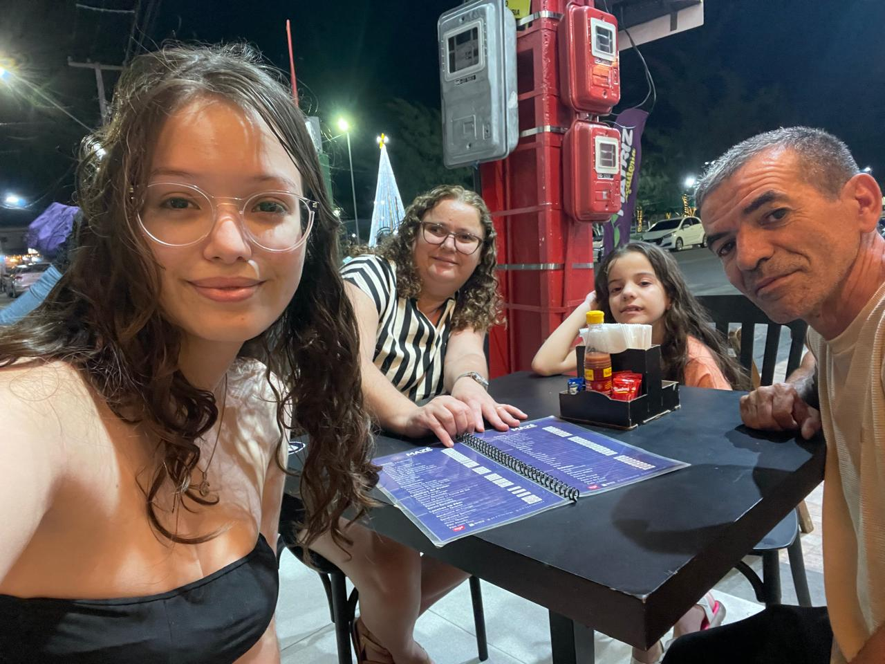
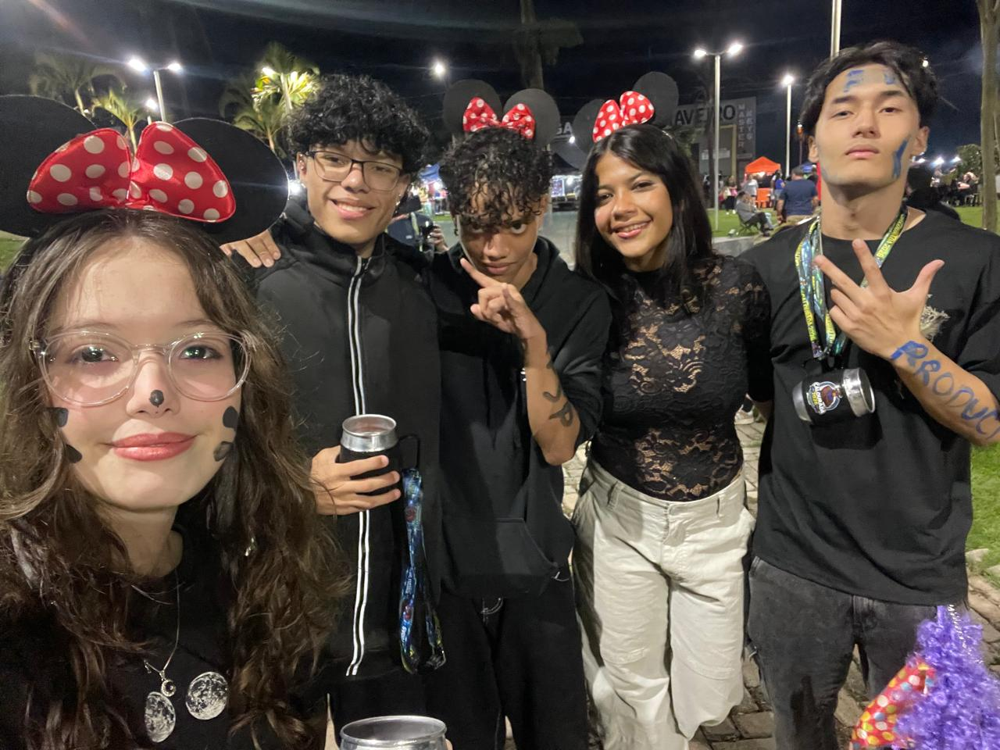
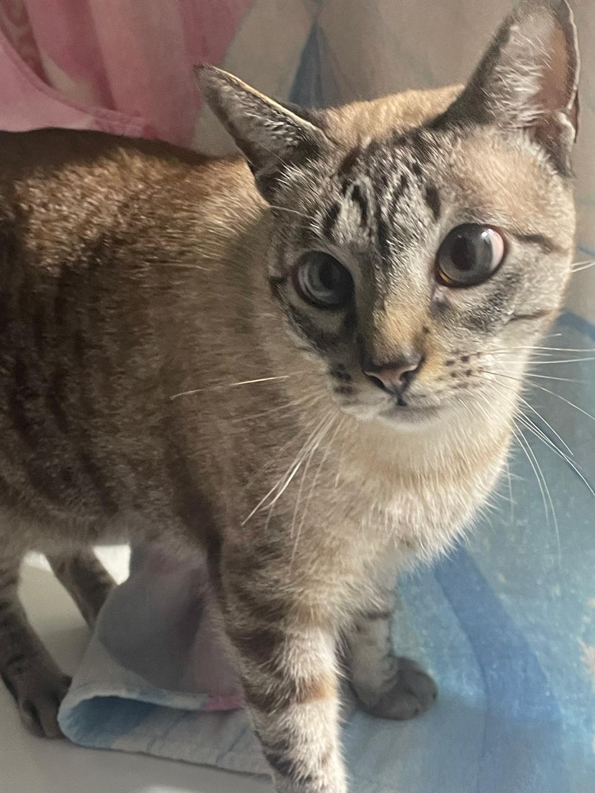

Sobre mim
Sou uma jovem que AMA livros de romântasia, mangás e animes. Conheci essa área pela minha irmã e me identifiquei, me apaixonei. No entanto, definitivamente não sou criativa.

Sou uma jovem que AMA livros de romântasia, mangás e animes. Conheci essa área pela minha irmã e me identifiquei, me apaixonei. No entanto, definitivamente não sou criativa.
A todos que aparecem ao lado direito (menos o Lucas), saibam que eu amo vocês. E aos que esqueci de colocar aqui, saibam que amo vocês também.
Minha irmã
Minha família

Meus amigos da época da escola

Pessoas maravilhosas que conheci no IFSP

Amigos da faculdade

Lucksandro
